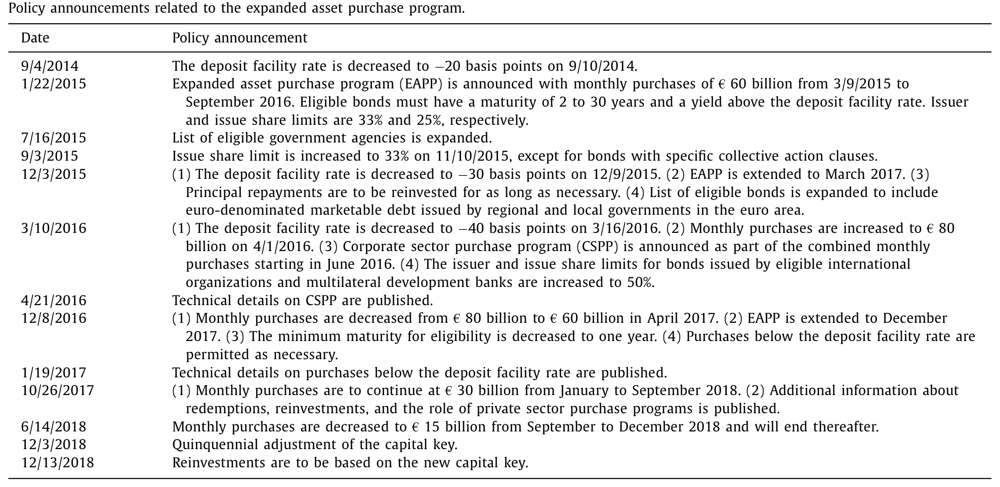
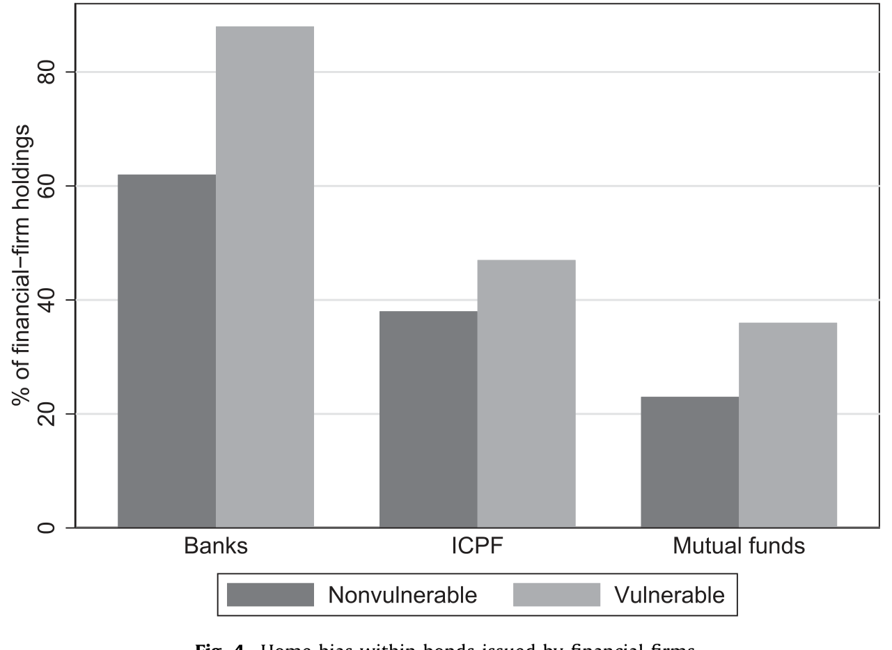
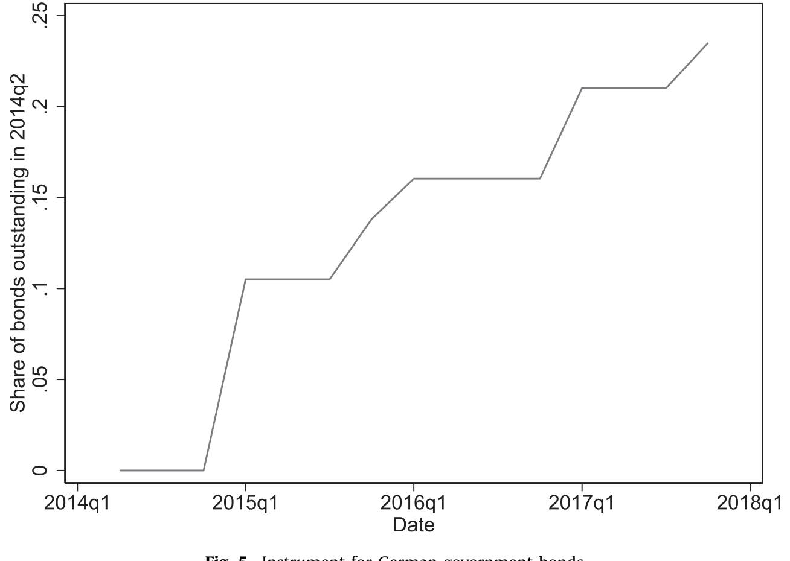
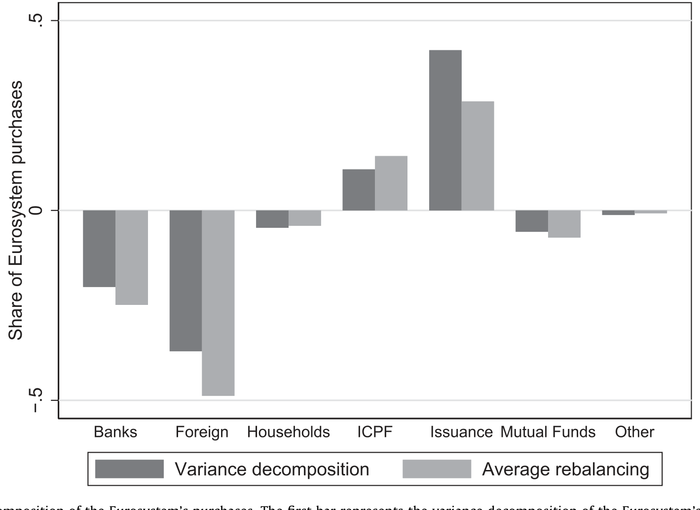
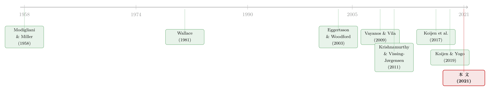

央行买债，债究竟从谁手里流走了？
本文读的是 Koijen, Koulischer, Nguyen & Yogo (2021, Journal of Financial Economics)：他们用欧元区全体投资者的逐券持仓数据，把欧央行量化宽松 (quantitative easing, QE) 的「传导机制」一层层拆开——结果发现，真正把债券卖给欧元体系的，主要是欧元区以外的境外投资者（每 1 欧元购买里卖出约 €0.40），风险并没有在某个地区或某类机构里堆积；再用一套需求体系做工具变量估计，量出国债收益率平均被压低了 65 个基点。
1 引言：QE 到底「碰」到了谁？
关于量化宽松，过去十年里我们听过太多争论：它有没有用？它把利率压下去了多少？这些问题大多是用「事件研究 (event study)」来回答的——盯住政策宣布那一天前后的几个交易窗口，看收益率跳了多少。
但有一个更朴素、也更难回答的问题，几乎一直没人能正面给出答案：当央行掏出上万亿欧元去买政府债券时，这些债券到底是从谁手里买走的？
这不是一个枝节问题。恰恰相反，它是整个 QE 机制的核心。因为央行买债之所以可能压低风险溢价，靠的正是「组合再平衡 (portfolio rebalancing)」——央行把久期 (duration) 和政府信用风险从市场里抽走，原本持有这些债的人被迫去配置别的资产，从而把别的资产的风险溢价也一并压低。可如果你连「谁在卖、谁在买」都看不见，你就无法判断这条链条究竟有没有发生，更无法判断风险被推到了哪里去。
本文的野心，就是把这条一直藏在黑箱里的链条，第一次完整地「看见」。
2 三种关于 QE 的理论——以及它们为什么都指向同一个问题
作者开篇先把 QE 的理论分成三类，这一步看似学究，实则是为后面的实证铺路。
第一类是「无关性 (irrelevance)」。 从 Wallace (1981) 到 Eggertsson & Woodford (2003)，他们把 Modigliani & Miller (1958) 的逻辑搬到了公开市场操作上：如果市场是完备的，家庭可以自己抵消央行组合变动带来的任何风险敞口变化，于是消费、通胀、资产价格统统不受 QE 影响。注意这一类理论的一个微妙推论——在异质投资者的世界里，只有那些通过税收和补贴暴露于央行投资收益的投资者才需要调整组合。换句话说，谁会动、谁不会动，本身就是一个可检验的命题。
第二类说 QE 有用，并给出了若干渠道：信号渠道（Mussa, 1981；Clouse et al., 2003）、以及最关键的组合再平衡渠道（Vayanos & Vila, 2009；Greenwood & Vayanos, 2014）。新一代以中介为核心的资产定价模型（He & Krishnamurthy, 2013；Brunnermeier & Sannikov, 2014）更是把「谁来吸收这笔供给冲击」放到了舞台中央。
第三类则担心金融稳定（Woodford, 2011；Stein, 2014；Coimbra & Rey, 2017）：压低借贷成本本就是 QE 的目的，但风险可能在某些地区或某类机构里悄悄堆积，从现有的资本与风险监管的缝隙里漏过去。
你看，这三类理论吵的其实是同一件事的三个侧面：风险敞口在投资者之间是怎么重新分配的。而这恰恰是逐券持仓数据能直接回答、事件研究却永远碰不到的东西。
下面这张表先把舞台搭好——欧央行从 2015 年那场宣布开始，一步步加码的全过程。

Table 1
具体地说，2015 年 1 月 22 日，欧央行宣布了「扩大资产购买计划 (expanded asset purchase program, EAPP)」，从 2015 年 3 月起每月购买 €60 billion；合格债券需满足 2 到 30 年期限、收益率高于存款便利利率（起始为 −20 个基点），并设有 33% 的发行人上限与 25% 的单券上限。到 2017 年底，欧元体系累计买入了约 €1.14 trillion 的资产，相当于欧元区 GDP 的 15% 左右。
关键的制度细节在于：每月 €44 billion 的政府债券购买，是按各国的资本钥匙 (capital key) 分配的——它是该国在欧元区内 GDP 份额与人口份额的等权平均。这个看似平淡的分配规则，后面会变成本文识别策略的「命门」。
3 数据：第一次看清「所有人」的资产负债表
本文真正的底气来自数据。作者用的是欧央行的 Securities Holding Statistics，它逐券记录了欧元区全体投资者的持仓，按托管行季度上报，样本覆盖 2013Q4 到 2017Q4，总持仓规模约 €27 trillion。再叠加 Centralised Securities Database 提供的价格与债券特征，以及欧元体系自身从各项购买计划里的逐笔交易。
投资者被分成七类：银行（货币金融机构）、保险公司与养老金 (insurance companies and pension funds, ICPF)、共同基金（其他金融机构，含对冲基金）、家庭、其他投资者（一般政府与非金融企业）、境外投资者，以及欧元体系本身。资产则分为合格政府债、不合格政府债、高评级公司债与中期票据、低评级公司债与中期票据、ABS 与担保债券、股票，以及境外资产。
这里有一个极聪明的处理：境外投资者的持仓是「算」出来的。既然作者观察到了欧元区全体投资者加上欧元体系的持仓，那么用每只券的总存量减去这两者，剩下的就是欧元区以外境外投资者的持有量。这一步是后面所有结论的基础。
借助这份数据，作者先复盘了 QE 之前的「初始状态」，更新了 Koijen et al. (2017)。一个值得警惕的发现是：脆弱国家 (vulnerable countries)（塞浦路斯、希腊、爱尔兰、意大利、葡萄牙、西班牙）的投资者——不只是银行，连保险、养老金、共同基金——都对本国政府债有着强烈的本土偏好 (home bias)。

Figure 4: Home bias within bonds issued by financial firms
如图 4 所示，这种本土偏好甚至延伸到金融机构发行的债券内部。它的含义并不轻松：监管者一直担心的「银行—主权」反馈环 (feedback loop)，其实远不止于银行——它还缠住了那些本该守护长期储蓄的机构。
4 谁把债券卖给了央行？
铺垫到这里，可以揭开第一个核心答案了。
作者基于市场出清 (market clearing) 在一阶差分上做分解：每当欧元体系购买 1 欧元的政府债券，这 1 欧元是从谁那里来的？
答案是：境外投资者卖出约 €0.40，银行卖出 €0.20，共同基金卖出 €0.06；保险与养老金这类长期投资者不卖，反而买入和欧元体系相同的债券；剩下的部分由净发行 (net issuance) 补上。
这个分解一锤定音。境外投资者是绝对的主力卖家——而且他们把脆弱国与非脆弱国的政府债以大致相同的比例卖出，卖完之后并不在欧元区内重新配置，而是直接抽身离开。这恰好印证了第 2 节里那个理论推论：动得最多的，是那些最不被央行投资收益「绑住」的投资者。
而保险和养老金的「逆向操作」也并非偶然。它们因为长期负债而需要对冲利率风险，对长期债券的需求天然缺乏弹性——所以当别人在卖，它们反而在买。
这幅图景与美国、日本的经验遥相呼应：Carpenter et al. (2015) 发现是家庭部门（含对冲基金等）在美联储 QE 中充当主要卖家，Saito & Hogen (2014) 发现日本 QE 里也是境外投资者率先离场。
那么，债券换了手，风险去哪了？作者用同一套「风险账本 (risk accounting)」框架在一阶差分上追踪久期、政府信用、公司信用和股票风险敞口的分布。结论出人意料地令人安心：没有证据表明风险在某个地区或某类机构里集中。如果一定要说有什么变化，QE 反而减小了银行、保险和养老金的久期错配。第 3 类「金融稳定担忧」理论所警告的风险堆积，至少在这段样本里没有出现。
5 识别策略：用「资本钥匙」撬开收益率
故事讲到这里，一个自然的问题浮出水面：组合再平衡固然发生了，可它到底把收益率压低了多少？
要回答这个问题，作者沿用了 Koijen & Yogo (2019) 的需求体系 (demand system) 方法。从一个传统的均值—方差组合出发，可以推出一个在实证上可处理的组合权重模型：它是资产价格、资产特征，以及「潜在需求 (latent demand)」的 logit 函数——潜在需求代表那些没有被可观测特征捕捉到的异质预期或约束。
对欧元区政府债，作者把投资者 \(i\) 对债券 \(n\) 的组合权重写成收益率、债券特征与潜在需求的 logit 函数。其最核心的估计方程，是相对于「外部资产 (outside asset)」\(w_i(0)\) 的对数相对权重：
这个方程的直觉值得停下来体会：收益率 \(y_n\) 越高（即价格越低），债券越有吸引力，权重越大，所以 \(\beta_i > 0\)；而 \(\beta_i\) 的大小，就是这个投资者需求的「弹性」。
但麻烦也恰恰出在这里。收益率 \(y_n\) 和潜在需求 \(\epsilon_i(n)\) 是联合内生的——那些被大家偷偷看好（潜在需求高）的债券，价格本就被买高、收益率被压低。直接回归会把因果搞反。
于是，本文真正最漂亮的一步出现了：它从制度规则里凿出了一个工具变量 (instrumental variable, IV)。前面说过，欧元体系对每个国家政府债的购买量，是按资本钥匙（GDP 份额与人口份额的等权平均）机械分配的。这个分配规则与某只债券「被不被看好」毫无关系，却实实在在地改变了市场上的剩余供给 (residual supply)：
$$ \text{Eurosystem purchases of country } c = (\text{capital key}_c) \times (\text{total purchases}) $$
把各国购买量相对于该国政府债市场规模做对比，就得到了一个与收益率相关、却外生于潜在需求的供给冲击。下面这张图展示了这一思路在德国国债上的具体构造。

Figure 5: Instrument for German government bonds
而下面这张方差分解则说明：欧元体系购买量的横截面变异，主要由这套机械规则驱动，而非央行对个别债券的相机抉择——这正是工具变量「外生性」的底气所在。

Figure 3: Variance decomposition of the Eurosystem’s purchases. The first bar represents the variance decomposition of the Eurosystem’s purchases of e
这正是本文相对于事件研究的方法论优势。事件研究的隐患在于：投资者可能因为宏观与市场新闻的渐进流动，提前消化了政策宣布。而基于工具变量的策略在更低的频率上运作，不需要去精确地圈定投资者预期调整的那几个日子。
（关于「央行如何亲手改变某只券的供给与价格」的另一面，可参见《同样的现金流，两个价格：当央行亲手掰断了套利这根杠杆》；而关于「合格清单」这一制度变量如何撬动债券价格，可参见《央行的「合格清单」：一只债券一旦能抵押，会发生什么？》。）
6 主要结果：65 个基点，以及它背后的弹性差异
第一阶段回归给出了那个标题数字：国债收益率平均下降了 65 个基点，且这个估计在各国之间从 38 到 83 个基点不等。
第二阶段则用收益率的变化去识别需求弹性。结果与第 4 节的「谁在卖」严丝合缝：弹性在投资者之间高度异质——境外投资者的需求最有弹性，保险和养老金最缺乏弹性。需求弹性高的投资者（尤其是境外投资者）正是在 QE 中卖给欧元体系的那群人。这把「再平衡」从一个口号，变成了一个被数据量化的机制。
这一发现对资产定价理论的含义不小：既然投资者的异质性决定了需求冲击如何被吸收，那么在模型里认真刻画投资者之间的异质性，就是一个重要的方向（关于「为什么理性投资者的需求会如此缺乏弹性」这条线索，可参见《为什么「理性投资者」也会拒绝换股？——把需求弹性拆成两半》；关于需求体系如何重塑我们对因子的理解，可参见《弱替代：因子动物园是从哪里冒出来的？》）。
最后，作者把每个投资者政府债组合的总久期，乘以 QE 对收益率的累积影响，估出了估值效应 (valuation effect)：总额 €415 billion，其中非脆弱国投资者 €179 billion、脆弱国投资者 €74 billion、境外投资者 €162 billion。非脆弱国的机构投资者获益更多，因为它们的组合更大、久期更长。一个诚实的告诫是：这些估值效应只反映了资产负债表的资产端，因为作者没有足够的负债端数据。
7 文献脉络
把这篇论文放回它所在的河流里看，会更清楚它的位置。
源头是 Modigliani & Miller (1958) 的无关性逻辑，被 Wallace (1981) 和 Eggertsson & Woodford (2003) 搬到了货币政策的语境里——它们告诉我们 QE「在什么条件下不起作用」。要让 QE 起作用，就必须打破某个假设，而 Vayanos & Vila (2009) 的「优先栖息地 (preferred habitat)」模型与 Greenwood & Vayanos (2014) 的债券供给理论，正是把「供给冲击影响风险溢价」写进模型的关键一跃。

实证上，早期的 Gagnon et al. (2011) 与 Krishnamurthy & Vissing-Jørgensen (2011) 用事件研究丈量了美国 QE 对利率的影响；Krishnamurthy et al. (2017) 把这套方法用到了欧元区。本文作者自己的 Koijen et al. (2017) 先用 AER 论文短文勾勒了欧元区 QE 的再平衡图景，而真正的方法论引擎来自 Koijen & Yogo (2019) 的需求体系。本文，正是把「全体投资者逐券持仓 + 需求体系 + 制度性工具变量」这三件武器第一次合在一起，对 QE 的传导机制做了一次解剖。
评论与延伸（Q&A + 研究方向）
(a) 几个可能的疑问
Q：本文和事件研究到底差在哪？为什么说它更可信？
事件研究估计的是「政策宣布日前后收益率跳了多少」，其致命隐患是预期可能被提前消化——宏观新闻渐进流动，投资者也许在宣布前就动了。本文的工具变量在更低频率上运作，识别力来自资本钥匙带来的剩余供给的横截面变异，不需要去圈定预期调整的精确日期。代价是它牺牲了高频的「干净窗口」，换来了对内生性的正面处理。
Q：把「资本钥匙」当工具变量，外生性可信吗？
资本钥匙是 GDP 份额与人口份额的等权平均，由条约规则机械确定，与某只债券「被不被看好」无关，这是其外生性的来源。唯一的隐患是 GDP 份额本身的内生性——但作者在脚注里指出，他们可以只用人口份额作为工具，并在早期版本中做过，结果稳健。图 3 的方差分解也佐证了购买量主要由机械规则而非相机抉择驱动。
Q：「境外投资者卖出 €0.40」这个数字，会不会只是测量误差？
这是个真问题。境外投资者的持仓是用「总存量减去欧元区全体 + 欧元体系」倒算出来的，因此它会吸收所有数据缝隙。作者自己也承认两个短板：观察不到欧元区投资者通过离岸主体的间接持有，也观察不到衍生品头寸。所以 €0.40 更应被理解为「境外居民净敞口的变化」，而非某个具体机构的交易记录。
Q：风险「没有集中」这个结论，是不是太乐观了？
需要限定语境。作者的风险账本只覆盖了资产端，没有负债端，也没有衍生品。所以「久期错配反而下降」说的是资产侧的久期敞口，而非机构的整体利率风险。金融稳定的担忧并没有被证伪，只是「在这段样本、在资产端、在这几类风险上」没有看到集中。
Q：保险和养老金「逆势买入」，是非理性吗？
恰恰相反，这是理性的。它们有长期负债，需要长久期资产来对冲利率风险，因此对长期债券的需求天然缺乏弹性。当 QE 压低收益率、别人争相卖出时，它们继续买入以维持久期匹配——这正是需求弹性异质性的微观基础，也是第二阶段估计出「保险养老金弹性最低」的来源。
Q：65 个基点，和美国 QE 的估计比起来算大还是小？
同一量级。这个平均值掩盖了巨大的国别差异（38 到 83 个基点），差异本身才是有意思的地方——它来自各国债券市场规模与购买量之比的不同，也来自各国投资者结构（境外占比、保险养老金占比）的不同。
(b) 几个可能的研究问题与提案
1. 把这套框架搬到欧元区公司债（CSPP）上。 【经济故事】本文聚焦政府债，但欧央行 2016 年起的公司部门购买计划 (CSPP) 同样值得「谁在卖、风险去哪」的解剖。公司债的持有人结构（基金、保险、境外）与流动性远比国债脆弱，再平衡的价格冲击可能更大。 【可行性】中。Securities Holding Statistics 同样覆盖公司债，需要叠加二级市场成交与流动性数据；识别上可借用 CSPP 的合格规则（评级、到期、发行人类型）构造供给工具，与本文的资本钥匙思路同构。
2. 境外投资者「抽身离开」之后，钱去了哪？ 【经济故事】本文发现境外投资者卖出后不在欧元区内再配置。那么这笔资金流向了哪类资产、哪个市场？这关系到 QE 的国际溢出与全球再平衡。 【可行性】中到低。需要境外投资者在欧元区之外的持仓数据（如 CPIS、TIC 等跨境头寸），本文数据本身只能算出净额、看不到去向，识别境外资金的「下一站」难度不小。
3. 久期弹性的异质性，能否预测下一次冲击中的脆弱性？ 【经济故事】既然保险养老金最缺弹性、境外最有弹性，那么在利率掉头向上时，谁会被「锁住」、谁会先跑？弹性结构本身可能是危机传播的隐藏地图。 【可行性】高。本文已经估出了分投资者的弹性，把样本延展到 2018 年后的加息周期，用同一套需求体系做样本外检验即可，数据与方法都现成。
4. 把负债端补进风险账本。 【经济故事】本文的「风险没集中」只看了资产端。若能引入保险与养老金的负债久期，就能判断 QE 究竟是缩小还是放大了它们的净利率敞口——这才是金融稳定真正关心的量。 【可行性】中。Abad et al. (2016) 的 OTC 衍生品数据可与持仓数据合并，作者自己也把这条路留给了未来研究；难点在负债端久期的逐机构测算。
我的判断
这篇论文的贡献，与其说是某个惊人的数字，不如说是一种视角的升级：它第一次把 QE 从「宣布日的价格反应」变成了「全体投资者资产负债表上的资金流动」，让「组合再平衡」这个一直停留在理论里的词，有了可以一笔笔核对的微观证据。「境外投资者吸收了大部分购买」与「风险没有在某处集中」这两个结论，都是只有看见全体持仓才能下的判断，事件研究永远给不出。
对识别策略，我最看重资本钥匙这个工具——它干净、机械、有制度背书，是把内生收益率撬开的好杠杆。我的保留主要有两点：其一，境外投资者头寸是倒算的残差，承载了所有数据缝隙，离岸持有与衍生品的缺口可能系统性地影响 €0.40 这个分解；其二，风险账本只覆盖资产端，「风险未集中」的结论需要被严格限定在这个范围内，不宜外推成「QE 没有金融稳定隐患」。
后续我最想看到的，是把这套「全体持仓 + 需求体系 + 制度工具」的组合拳，打到公司债与信用市场上去，并把负债端补进风险账本——届时我们才能真正回答那个最初的、也是最难的问题：央行买债，风险究竟落到了谁的肩上。
参考文献
Brunnermeier, M.K., Sannikov, Y. (2014). A macroeconomic model with a financial sector. American Economic Review 104(2), 379–421.
Carpenter, S., Demiralp, S., Ihrig, J., Klee, E. (2015). Analyzing Federal Reserve asset purchases: From whom does the Fed buy? Journal of Banking & Finance 52, 230–244.
Eggertsson, G.B., Woodford, M. (2003). The zero bound on interest rates and optimal monetary policy. Brookings Papers on Economic Activity 1, 139–211.
Gagnon, J., Raskin, M., Remache, J., Sack, B. (2011). The financial market effects of the Federal Reserve's large-scale asset purchases. International Journal of Central Banking 7, 3–43.
Greenwood, R., Vayanos, D. (2014). Bond supply and excess bond returns. Review of Financial Studies 27(3), 663–713.
He, Z., Krishnamurthy, A. (2013). Intermediary asset pricing. American Economic Review 103(2), 732–770.
Koijen, R.S.J., Koulischer, F., Nguyen, B., Yogo, M. (2017). Euro-area quantitative easing and portfolio rebalancing. American Economic Review Papers & Proceedings 107(5), 621–627.
Koijen, R.S.J., Yogo, M. (2019). A demand system approach to asset pricing. Journal of Political Economy 127(4), 1475–1515.
Krishnamurthy, A., Nagel, S., Vissing-Jørgensen, A. (2017). ECB policies involving government bond purchases: Impact and channels. Review of Finance 22(1), 1–44.
Krishnamurthy, A., Vissing-Jørgensen, A. (2011). The effects of quantitative easing on interest rates: Channels and implications for policy. Brookings Papers on Economic Activity 2, 215–265.
Modigliani, F., Miller, M.H. (1958). The cost of capital, corporation finance and the theory of investment. American Economic Review 48(3), 261–297.
Vayanos, D., Vila, J.-L. (2009). A preferred-habitat model of the term structure of interest rates. NBER Working Paper No. 15487.
Wallace, N. (1981). A Modigliani-Miller theorem for open-market operations. American Economic Review 71(3), 267–274.